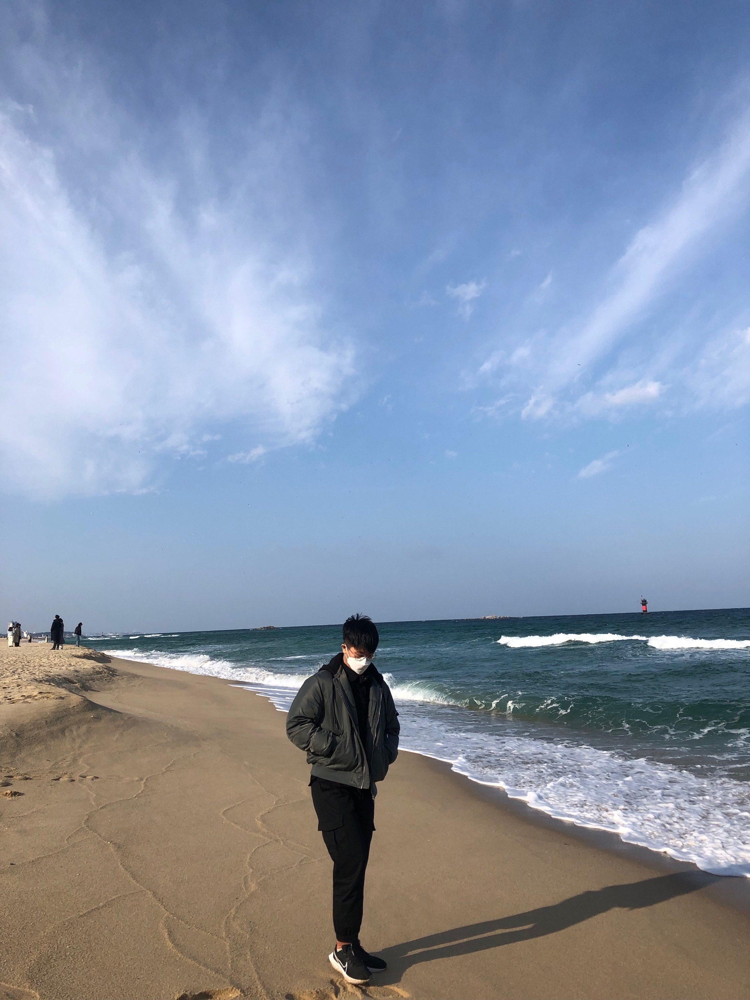

I am a Master's student at Sungkyunkwan University, working in the Media System Lab. My research focuses on generative models for image restoration, leveraging diffusion models to solve inverse problems and advance medical AI applications in collaboration with Samsung Medical Center.

I'm Jungwoo Bae, a Master's researcher at the Media System Lab, SKKU, advised by Prof. Jitae Shin. My work sits at the intersection of computer vision, generative modeling, and medical AI.
My current research focuses on designing intelligent systems that restore degraded images — denoising, deblurring, dehazing, and low-light enhancement — in a unified all-in-one framework. I leverage pre-trained diffusion models to perform zero-shot domain adaptation by casting restoration as an inverse problem.
I am also deeply invested in applying these techniques to medical imaging, including non-invasive screening via retinal fundus image analysis and cardiovascular risk prediction, in collaboration with the SKKU-Samsung Medical Center Joint Project.
I'm always open to discussing research collaborations, interesting projects, or new opportunities. Whether it's about computer vision, diffusion models, or medical AI — feel free to reach out!